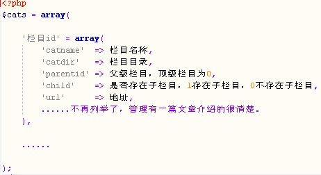

FineCMS栏目信息保存在全局数组$cats中，当然你要知道栏目数组的结构了

通过这张图，大家应该对$cats数组结构了如指掌了吧
1、调用顶级栏目
{loop $cats $cat}
{if $cat['paentid'] == 0 && $cat['ismenu']} //这里的$cat[‘ismenu’]是指作为菜单（在栏目管理处可以看到）。
业务逻辑处理....
{/if}
{/loop}
2、调用顶级栏目（存在下级栏目）
{loop $cats $cat}
{if $cat['paentid'] == 0 && $cat['ismenu']} //先调出顶级栏目
业务逻辑处理....
{if $cat['child']} //判断该栏目是否有子栏目，N级栏目以此类推。
{loop $cats $a} //循环栏目组，$a防止与$cat冲突。
{if $a['parentid']==$cat['catid']} //子栏目的父栏目id=它父栏目id
子栏目业务逻辑处理....
{/if}
{/loop}
{/if}
{/if}
{/loop}
3、循环栏目文章
{loop $cats $cat}
{if $cat['paentid'] == 0 && $cat['typeid']==1} //先调出顶级栏目,且为内部栏目。
<h1>当前顶级栏目：{$cat['catname']}</h1>
{if $cat['child']} //判断该栏目是否有子栏目。
{loop $cats $a} //循环子栏目数组，赋值$a。
{if $a['parentid']==$cat['catid']} //子栏目的父栏目id=它父栏目id
{list catid=$a[catid] num=10}
<li>{$t['title']}</li> //循环子栏目中的文章i信息
{/list}
{/if}
{/loop}
{/if}
{/if}
{/loop}
4、献给小白，在列表中取栏目信息
{list catid=$catid .....}
栏目：{$cats[$t['catid']]['catname']}
{/list}